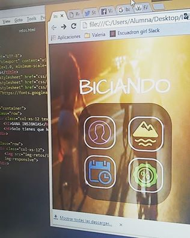

Me llamo Valeria. Desde que tengo uso de razón, he tratado de plasmar una forma de decir lo que siento, gestos, dibujos, música, palabras… como ahora.
Yo soy esa que puede escribir sentimientos en 140 caracteres, pero también soy esa a la que 140 caracteres no le bastan. Así que he aquí el inicio de esto llamado Tecnologia, me gusta transmitir lo que siento, demostrarlo… porque si no lo hago, me ahogo.
El mundo de la Tecnologia me ha demostrado que el codigo tambien es, hoy en dia, el mejor pincel, la mejor obra para cambiar el mundo.
Con este proyecto comence a utilizar Bootstrap y a utilizar animaciones en elementos como Iconos
Ver en GitHubCuando realice este proyecto lo disfrute mucho, conoci mas sobre Bootstrap y sus etiquetas, ademas que recuerdo bien que me encontraba en un Squad muy ameno.
Ver en GitHubEste proyecto fue un reto para mi, porque mas que aprender codigo y dominarlo, aprendi la importancia de negociar en cuestion de tiempos y sobre todo manejar un nivel de estres alto.
Ver en GitHubKane, de mis favoritos. Entendi que (quiza ya algo tarde) existen muchas formas de resolver este tipo de proyectos, la grid, los estilos y animaciones, las entendia perfectamente, pero lo valioso de este proyectos fue encontrar un equilibrio entre familia, deberes, y en general lo que mas quiero.
Ver en GitHub
Este es un sitio para comprar Stickers en linea. Utilice Bootstrap 4 y SCSS, el trabajo fue colaborativo y para ello utilizamos GitHub.
Mellow cambio el estilo de su Sitio Web y junto con mi compañera lo trabajamos, fue un buen reto y sobre todo divertido.
BICIANDO
Proyecto que junto con Okaidy German y un equipo desarrollamos en el HackLaboratoriaMx, obteniendo el premio a *Mejor Desarrollo".
BICIANDO es una aplicación enfocada en disminuir la contaminación y el uso excesivo del auto, fomentando el uso de la bicicleta mediante una divertida aplicación. El proyecto aun se encuentra en una version de prototipo; mi colega Okaidy y yo nos reuniremos en los primeros meses del 2017 para contunuar con su desarrollo.
Hack Institute publico en su blog un poco sobre mi,
de como inicio mi vida con la tecnologia, adelante en el siguiente link lo puedes leer...
Lee mi blog
Hard Skills
HTML (Avanzado)
CSS / SCSS (Avanzado)
JavaScript / JQuery (Basico)
Flexbox / Bootstrap (Avanzado)
Photoshop / Illustrator (intermedio)
GitHub (Intermedio)
Soft Skills
Trabajo en equipo
Control de Estres
Creatividad
Razonamiento Logico
Lealtad
Autodidacta